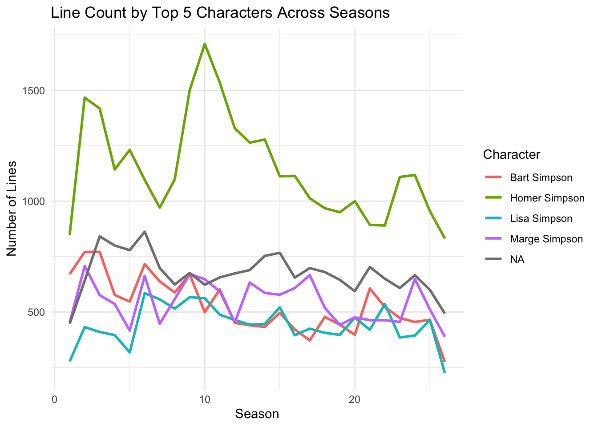
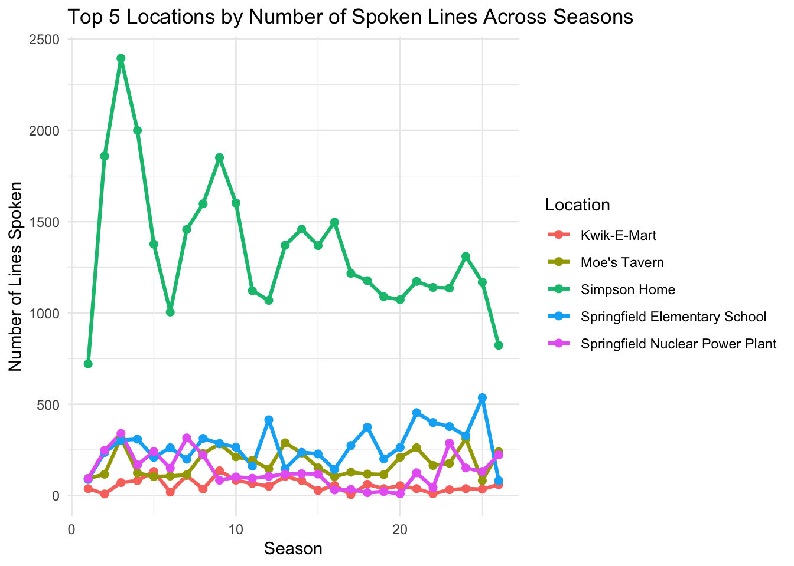

Rows: 6722 Columns: 4
── Column specification ────────────────────────────────────────────────────────
Delimiter: ","
chr (3): name, normalized_name, gender
dbl (1): id
ℹ Use `spec()` to retrieve the full column specification for this data.
ℹ Specify the column types or set `show_col_types = FALSE` to quiet this message.
Rows: 600 Columns: 14
── Column specification ────────────────────────────────────────────────────────
Delimiter: ","
chr (4): image_url, production_code, title, video_url
dbl (9): id, imdb_rating, imdb_votes, number_in_season, number_in_series, o...
date (1): original_air_date
ℹ Use `spec()` to retrieve the full column specification for this data.
ℹ Specify the column types or set `show_col_types = FALSE` to quiet this message.
Rows: 4459 Columns: 3
── Column specification ────────────────────────────────────────────────────────
Delimiter: ","
chr (2): name, normalized_name
dbl (1): id
ℹ Use `spec()` to retrieve the full column specification for this data.
ℹ Specify the column types or set `show_col_types = FALSE` to quiet this message.
Warning: One or more parsing issues, call `problems()` on your data frame for details,
e.g.:
dat <- vroom(...)
problems(dat)
Rows: 158271 Columns: 13
── Column specification ────────────────────────────────────────────────────────
Delimiter: ","
chr (5): raw_text, raw_character_text, raw_location_text, spoken_words, norm...
dbl (7): id, episode_id, number, timestamp_in_ms, character_id, location_id,...
lgl (1): speaking_line
ℹ Use `spec()` to retrieve the full column specification for this data.
ℹ Specify the column types or set `show_col_types = FALSE` to quiet this message.
ggplot(seasonal_lines, aes(x = season, y = line_count, color = raw_character_text)) +geom_line(size =1) +labs(title ="Line Count by Top 5 Characters Across Seasons",x ="Season",y ="Number of Lines",color ="Character" ) +theme_minimal()
Warning: Using `size` aesthetic for lines was deprecated in ggplot2 3.4.0.
ℹ Please use `linewidth` instead.

Question 1
#How does the number of lines spoken by the top 5 characters change across seasons? Homer Simpson consistently has the most lines across all seasons, peaking around season 10. Bart, Marge, and Lisa have fewer lines with moderate fluctuations over time. One of the top 5 entries is labeled “NA,” likely due to missing or unlinked character data/ extras. The dialogue remains centered around Homer, with other main characters contributing steadily.
Question 2
“Which locations are used most frequently in the show, and how has their usage changed across seasons?”
lines_clean <- lines %>%filter(!is.na(location_id)) # remove lines without a known location
ggplot(location_trends, aes(x = season, y = line_count, color = location_name)) +geom_line(size =1.1) +geom_point(size =2) +labs(title ="Top 5 Locations by Number of Spoken Lines Across Seasons",x ="Season",y ="Number of Lines Spoken",color ="Location" ) +theme_minimal()

“Which locations are used most frequently in the show, and how has their usage changed across seasons?”
The Simpson Home is the most used location, peaking around season 3 and staying central throughout the series. Other locations—like the school, Moe’s Tavern, and the power plant appear far less often, with occasional spikes that reflect shifts in episode focus. Overall, the show remains grounded in the family’s home, with other settings used more episodically.